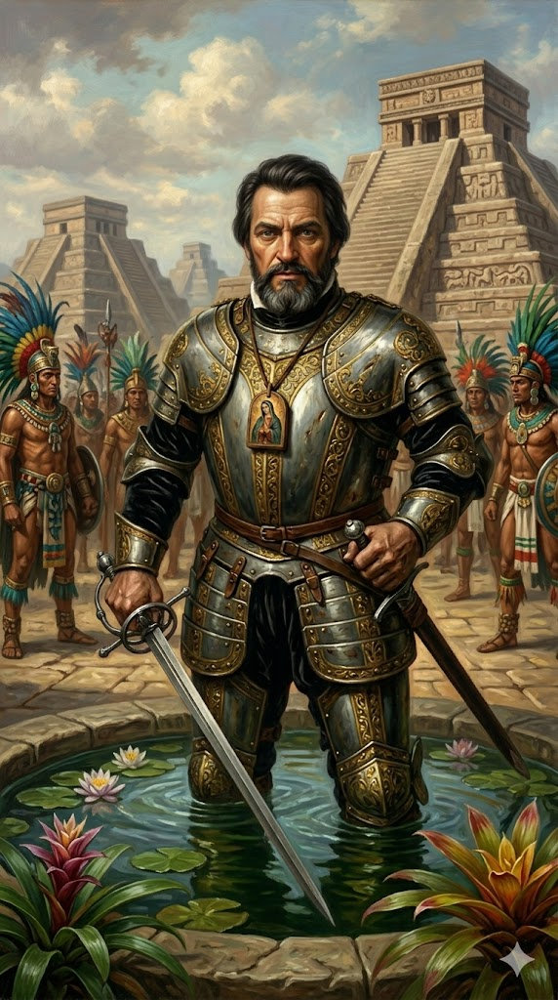

הרנאן קורטס

לחץ על התמונה להגדלה
מקור ומשמעות השם המלא (אטימולוגיה)
שם פרטי: הרנאן (Hernán / Hernando)
השם "הרנאן" הוא קיצור בספרדית קסטיליינית לשם "הרננדו" (Hernando), שהוא עצמו גרסה ספרדית לשם הגרמאני הוויזיגותי Ferdinando (פרדיננד).
פירוש מילולי: השם מורכב מהשורשים "Fardi" (מסע, מסע סכנה) ו-"Nand" (אמיץ, נועז, מוכן). המשמעות היא "נועז במסע" או "מוכן לצאת לדרך סכנה". שם זה קלע בדיוק לאופיו של אדם שהימר על חייו במסע הרפתקני ששום אירופאי לפניו לא העז לבצע.
שם משפחה: קורטס (Cortés)
שם המשפחה "קורטס" נפוץ מאוד בספרד ונושא משמעות כפולה של אופי ומעמד.
פירוש ובלשנות: המילה נגזרת מהמילה הצרפתית/לטינית העתיקה Corteis או Cortés, שפירושה המילולי הוא "אדיב", "מנומס" או "איש חצר" (Courtier – אדם המורגל בנימוסי חצר המלוכה).
האירוניה: למרות שקורטס השמיד ציביליזציה שלמה באכזריות מחרידה, הפירוש ה"אדיב" של שמו בא לידי ביטוי ביכולתו הדיפלומטית והמניפולטיבית. הוא היה נואם כריזמטי, משפטן חלקלק, ואשף דיפלומטי שהצליח לשכנע אינדיאנים להילחם לצידו נגד האצטקים תוך שימוש בחנופה והבטחות שווא.
תואר אצולה מאוחר: המרקיז של עמק ואחאקה
לאחר כיבוש מקסיקו, הקיסר קרל החמישי העניק לו את התואר "Marqués del Valle de Oaxaca". תואר זה הפך אותו לאחד האנשים העשירים ובעלי הקרקעות הגדולים ביותר באימפריה הספרדית.
ילדות באקסטרמדורה והנשירה מאוניברסיטת סלמנקה
הרנאן קורטס נולד ב-1485 בעיר מדיין (Medellín) שבחבל אקסטרמדורה (Extremadura) במערב ספרד. זהו חבל ארץ צחיח, עני וקשה, שהצמיח את רוב הקונקיסטאדורים האכזריים ביותר של ספרד (כולל פרנסיסקו פיסארו). קורטס נולד למשפחת אצולה זוטרה וענייה (Hidalgo).
בניגוד לרוב הקונקיסטאדורים שהיו בורים גמורים (כמו פיסארו שלא ידע קרוא וכתוב), קורטס היה אדם משכיל מאוד. בגיל 14 הוריו שלחו אותו ללמוד משפטים ולטינית באוניברסיטת סלמנקה (Salamanca) היוקרתית, בתקווה שיהפוך לעורך דין או נוטריון מצליח. אולם, קורטס היה צעיר חסר מנוחה, חובב הימורים, נשים והרפתקאות. לאחר כשנתיים של לימודים, להוריו למגינת ליבם, הוא נשר מהאוניברסיטה וחזר הביתה.
היתרון הקריטי: למרות שנשר, ההשכלה המשפטית של קורטס בסלמנקה הייתה הנשק החזק ביותר שלו – יותר מהחרב או הרובה. הוא ידע בדיוק איך לנסח מכתבים משפטיים למלך, איך להשתמש בפרצות חוק, ואיך לתת "הכשר חוקי" לכל מעשי המרד, הבגידה והכיבוש שעשה בעולם החדש.
אידאולוגיה, מקיאווליזם ופנאטיות דתית
קורטס הונע משילוב קטלני של אידאולוגיות שונות שיצרו את "המכונה" המושלמת לכיבוש מקיאווליסטי:
1. אופורטוניזם וגאונות פוליטית (הפרד ומשול): בניגוד לפונסה דה ליאון שחיפש אדמות ריקות או אוחדה שחיפש שוד פנינים פשוט, לקורטס היה חזון של אימפריה. הוא הבין ש-500 ספרדים לא יכולים לנצח מיליוני אינדיאנים בכוח הזרוע בלבד. האידאולוגיה הצבאית שלו הייתה זיהוי נקודות תורפה פוליטיות. כשהגיע למקסיקו, הוא גילה שהאצטקים שולטים בעשרות שבטים אחרים בכוח טרור ודורשים מהם מנחות קורבנות אדם. קורטס הפך ל"משחרר" מדומה – הוא כרת בריתות עם השבטים המדוכאים (כמו בני הטלאקסקאלה) והשתמש בהם כצבא בשר תותחים של עשרות אלפים כדי להשמיד את הבירה האצטקית.
2. זהב וכבוד אישי (La Honra): כבן אקסטרמדורה עני, קורטס רצה לבסס את מעמדו כאציל עליון בספרד. הוא רדף אחר זהב באובססיביות חולנית (הוא צוטט כאומר לילידים: "אני וחברי הספרדים סובלים ממחלה בלב, שהתרופה היחידה לה היא זהב").
3. מסע צלב פנאטי נגד עבודת האלילים: לצד הציניות הפוליטית שלו, קורטס היה קתולי פנאטי אמיתי. כשהוא נחשף למקדשים האצטקיים ספוגי הדם שבהם נערכו קורבנות אדם ועקירת לבבות (לאלים כמו וויצילופוצ'טלי), הוא חווה זעזוע דתי עמוק. הוא ראה בכיבוש אימפריית האצטקים "מלחמת קודש" (Guerra Santa), ומשימתו האישית מהאל הייתה לנתץ את הפסלים המפלצתיים ולהביא את האור הנוצרי לאמריקה.
נסיבות היסטוריות: המרד בקובה וההברחה (1519)
הסיפור הדרמטי של קורטס מתחיל דווקא במרד נגד הממונים עליו בספרד.
אולם, קורטס החל לבזבז הון עתק על ציוד צבאי כבד, תותחים וסוסים. ולאסקס המבועת הבין שקורטס מתכנן כיבוש פרטי והחליט לבטל את המינוי שלו ולאסור אותו. קורטס קיבל הדלפה מחבר על מעצרו הקרב. באמצע הלילה של ה-18 בפברואר 1519, קורטס הבריח את הצי שלו (11 ספינות, 500 חיילים, 13 תותחים ו-16 סוסים) מנמל סנטיאגו דה קובה אל הים הפתוח, בעודו מכריז למעשה על מרד גלוי נגד מושל קובה.
קורטס ידע שברגע שעזב ללא רשות, הוא נחשב למורד בכתר. הדרך היחידה שבה הקיסר קרל החמישי (המלך הספרדי) יסלח לו, הייתה רק אם הוא יביא לו אימפריה שלמה במתנה וזהב בלתי נתפס.
הפלישה למקסיקו והשמדת האימפריה האצטקית (1519-1521)
המהלך של קורטס במקסיקו הוא רצף של טקטיקות מזהירות, הימורים מטורפים ואכזריות צרופה.
תיקון היסטורי: בניגוד לאגדה הרווחת שבה "קורטס שרף את ספינותיו", הוא למעשה הטביע ופירק אותן בחשאי, כדי לשמור על החבלים, הברזל, והמפרשים שישמשו אותו מאוחר יותר בבניית ספינות לקרב על האגם.
4. הלילה העצוב (La Noche Triste) והמצור הסופי:
השליטה התנפצה לאחר שסגנו של קורטס ביצע טבח פומבי באצילים האצטקים במהלך פסטיבל דתי. האצטקים פתחו במרד אדיר. מוקטסומה נהרג (על ידי הספרדים או מאבנים שזרק עליו עמו). ב-30 ביוני 1520, קורטס ואנשיו ניסו להימלט מהעיר הצפה בחסות החשכה, אך התגלו ונטבחו. מאות ספרדים מתו שטבעו באגם בגלל שהיו עמוסים בזהב שלא רצו לזרוק. לילה זה מכונה ההיסטוריה הספרדית "הלילה העצוב".
אך קורטס לא ויתר. במשך שנה הוא התארגן מחדש, בנה ספינות מלחמה קטנות, גייס רבבות אינדיאנים, ויצר מצור הרמטי על הבירה טנוצ'טיטלאן. לאחר 93 ימי מצור אכזרי, רעב, והתפרצות מגפת האבעבועות השחורות (שהביאו הספרדים וחיסלה כ-40% מתושבי העיר), העיר נפלה סופית ב-13 באוגוסט 1521. האימפריה האצטקית חדלה מלהתקיים.
השפעות היסטוריות ארוכות טווח (לידת מקסיקו)
הריסת ציביליזציה ובניית "ספרד החדשה": הכיבוש של קורטס היה אחד האירועים המחרידים והמשמעותיים ביותר בהיסטוריה של יבשת אמריקה. קורטס הרס עד היסוד את המקדשים והמבנים האצטקים של טנוצ'טיטלאן, ובנה על חורבותיהם (באמצעות עבודת כפייה אינדיאנית) את הבירה החדשה של אמריקה הלטינית – עיר מקסיקו (Mexico City). הוא יצר את הישות הפוליטית "מלכות המשנה של ספרד החדשה" (Nueva España).
התגמול והבנייה מחדש (1521-1528): מיד לאחר הניצחון, הקיסר קרל החמישי אישר בדיעבד את מרדו של קורטס (בזכות אוצרות הזהב שנשלחו לספרד). קורטס מונה למושל, קפטן-גנרל ושופט עליון של "ספרד החדשה". הוא קיבל את התואר היוקרתי "מרקיז עמק ואחאקה" והפך לאחד האנשים העשירים באימפריה, כשהוא שולט על עשרות אלפי ילידים כאריסים.
הפרנויה של הכתר ושלילת הסמכויות: למרות עושרו, הקיסר מעולם לא סמך על קורטס. הכתר הספרדי פחד שקורטס ינצל את הפופולריות שלו כדי להכריז על עצמו כמלך עצמאי של מקסיקו. כדי לנטרל אותו, המלך שלח פקידים מלכותיים ו"משנה למלך" (Viceroy) ששללו מקורטס כל סמכות פוליטית ואזרחית, והשאירו לו רק תארים צבאיים טקסיים. קורטס מצא עצמו שקוע בבירוקרטיה ותביעות משפטיות בלתי פוסקות.
מסעות כושלים והרפתקאות אחרונות: קורטס לא יכול היה לשבת בשקט בחווה. ב-1524 יצא למסע הרסני בג'ונגלים של הונדורס כדי להעניש קצין שמרד בו – מסע שכמעט ועלה לו בחייו ורושש אותו. בשנות ה-30 של המאה ה-16, הוא מימן משלחות לחקר חופי האוקיינוס השקט וגילה את חצי האי באחה קליפורניה (מפרץ קליפורניה נקרא עד היום לעיתים "ים קורטס"), אך מסעות אלו הניבו חובות כבדים ללא כל זהב.
המוות הטרגי בספרד (1547): ב-1540 קורטס חזר לספרד, ממורמר וזועם. הוא התחנן לפגישה עם הקיסר כדי לטהר את שמו. אגדה מפורסמת מספרת שנדחף לכרכרת הקיסר, וכשזה שאל "מי אתה?", ענה קורטס: "אני האדם שנתן לך יותר מחוזות ממה שאבותיך השאירו לך ערים!". קורטס השתתף במסע קרב כושל באלג'יר (1541), ולבסוף פרש לאחוזה קטנה באנדלוסיה. הוא מת מדיזנטריה בדצמבר 1547, בגיל 62 – עשיר מאוד, אך מתוסכל עמוקות מתחושת הבגידה של האימפריה אותה בנה במו ידיו.
מקורות וביבליוגרפיה (אימות מחקר)
- "המכתבים של קורטס" (Cartas de relación): מקור ראשוני מובהק. סדרה של חמישה מכתבים (דוחות מפורטים להפליא) שקורטס שלח אישית לקיסר קרל החמישי בין 1519 ל-1526, במטרה להצדיק חוקית את מרדו במושל קובה ולתאר את פלאי מקסיקו.
- "ההיסטוריה האמיתית של כיבוש ספרד החדשה" (Bernal Díaz del Castillo): זיכרונותיו של חייל פשוט (ברנאל דיאס) שלחם כתף אל כתף עם קורטס, אשר נכתבו עשרות שנים מאוחר יותר כדי לתת את ה"קרדיט" גם לחיילים הפשוטים ולא רק למפקד.
- מחקר אקדמי קלאסי ומודרני: Thomas, Hugh (1993). Conquest: Montezuma, Cortés, and the Fall of Old Mexico. (אחד מספרי המחקר המקיפים והעמוקים ביותר שקיימים על הכיבוש).